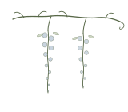

Two ways to work together.
Both start with the same 30-minute discovery call. From there, the rhythm depends on what you're carrying.

Ongoing 1:1 coaching
The core of the practice. We meet every two weeks for an hour. Between sessions, you carry one small experiment — sized so you can actually do it.
- Six-session minimum (three months) — change takes time.
- Video, phone, or walk-and-talk by mutual preference.
- Voice notes between sessions when something comes up.
- Sliding scale available — ask.
Transition intensive
A focused half-day for people in the middle of a specific decision — a job change, a return to work, a chapter closing. We map what's true, what's possible, and what the next small move looks like.
- Four hours, with a long break in the middle.
- Pre-work: a short written reflection.
- One follow-up session two weeks later, included.
- Best as a standalone or after we've worked together for a while.
Start with what's already true. We'll find the rest from there.
A 30-minute discovery call, no pressure either way.
You write a sentence or two.
About what's bringing you to coaching. No essay required. Two lines is plenty.
We talk for 30 minutes.
Mostly you talk; I listen and ask. By the end, the shape of the work usually shows itself.
You sit with it.
No same-day decisions. I'd rather you take a few days and notice what stays with you.
If yes, we begin.
If not, I'll often have someone to recommend. Either way, the call is yours to keep.
Book a discovery call.
Pick a time that works — or email YOUR-EMAIL@gmail.com. I read everything within two business days.
